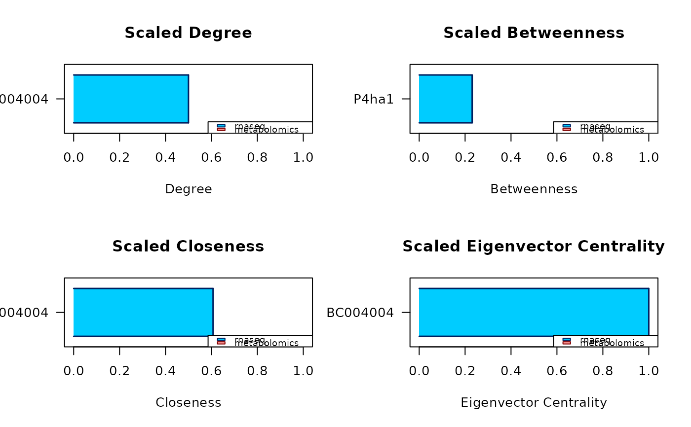
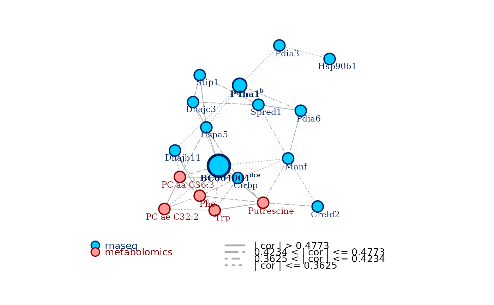

Find the top central nodes according to multiple centrality measures of
choice Use a consensus of multiple centrality measures to identify nodes
that could be important in the network obtained through carmon
compute_centrality(
carmon_obj,
measures = "dbce",
max_candidates = NULL,
quant = NULL,
scaled = TRUE,
verbose = FALSE
)The object of S3 class carmon.
A string of characters, each one representing one of four
possible centrality measures implemented: 'd' stands for degree
centrality, 'b' for betweenness centrality, 'c' for closeness
centrality, and 'e' for eigenvector centrality. Default is 'dbce', all
the four measures.
What is the highest amount of nodes that can be
highlighted by each measure, before finding the consensus? Default
is 20. When given together with the quant argument, it overrides the
quant argument when max_candidates is smaller than the chosen quantile,
it is overrode by quant in the opposite case.
What is the top percentile of nodes that can be highlighted by
each measure, before finding the consensus? Default is the top 5%.
When given together with the max_candidates argument, it overrides the
max_candidates argument when the amount of nodes in the
chosen top percentile is smaller than the chosen maximum amount of
candidate nodes, it is overrode by max_candidates in the opposite case.
Logical, whether to compute centrality measures as 0-1 scaled values. Defaults to TRUE.
The level of verbosity of the centrality analysis. 0
suppresses the information output, while 1 and 2 give progressively
increasing amounts of information about the inner computations happening
inside the analysis.
compute_centrality() returns an object of S3 class carmon,
consisting of the input carmon_obj enriched of two new elements:
report an R data frame. The rows correspond to the nodes identified to
be central by the analysis, and they are ordered based on how large is
the consensus among the different measures. The data frame has 6 or less
columns, depending on whether the respective centrality measures have
found any central node:
candidate, the name of the central node;
degree, the degree centrality of the node;
betweenness, the betweenness centrality of the node;
closeness, the closeness centrality of the node;
eigenvector, the eigenvector centrality of the node; and
central for, the a string reporting the first letter of all the
measures according to which the node is central for.
measures_list an R named list of as many elements as the number of
chosen centrality measures, the name of each element being the associated
centrality measure. Each element is a named numerical vector, containing
the measures of the top central nodes identified in the analysis. The
name of each element of the vectors is the name of the node associated to
the reported measure.
# compute_centrality() needs an object of S3 class 'carmon' as an input. The
# following line quickly obtains one.
data(multi_omics_small)
c_obj <- carmon(multi_omics_small,
net_method = "correlation",
cor_quant = 0.25, analysis = FALSE, verbose = FALSE
)


# Then to perform the consensus centrality analysis:
c_obj <- compute_centrality(c_obj)